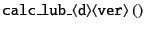

Next: Polydisperse Systems
Up: Lubrication
Previous: Lubrication
The lubrication forces for  (all) particles
The lubrication forces for (all) particles
(all) particles
The lubrication forces for (all) particles
is calculated by
which is called by the top-level function
for mobility, resistance, and mixed problems (type)
in 2- and 3-dimensions (d)
with F, FT, and FTS versions (ver).
The function

has particle-loops.
Under the periodic boundary condition, particles in the image cells
are also taken into account.
In the loop for particle-particle pairs,
either
for monodisperse system or
for polydisperse system is called.
Kengo Ichiki 2008-10-12